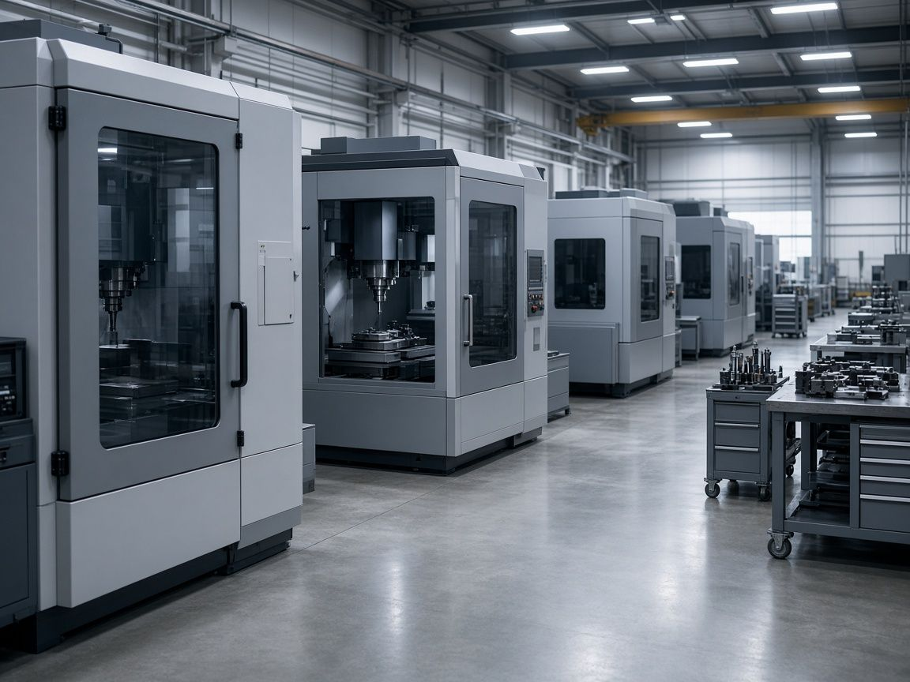
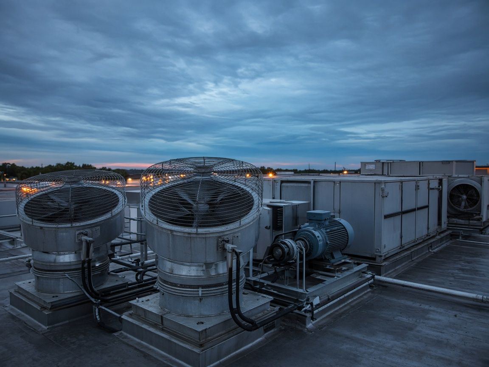
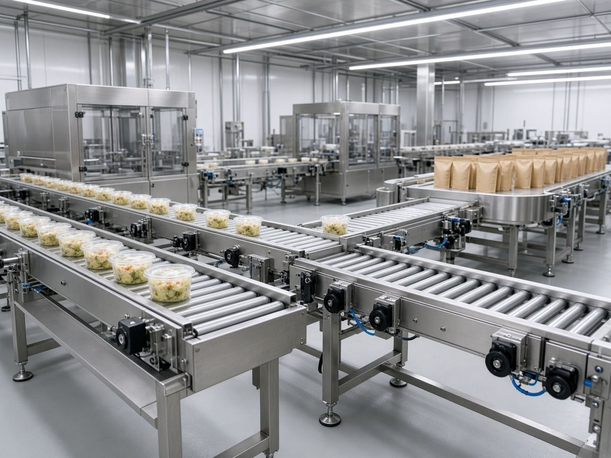
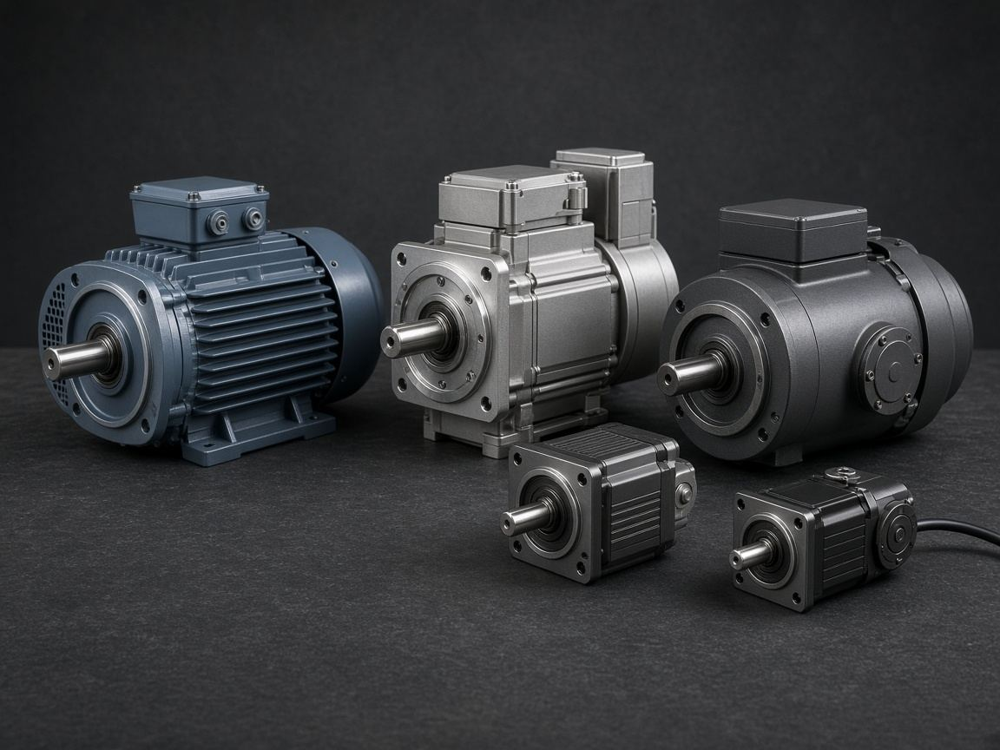

Industries We Serve
服務產業與應用
以下為常見的應用領域，若您的產業未列於此，也歡迎與我們討論需求。

自動化設備與產線
輸送線、機械手臂、自動化組裝設備所需之伺服、步進與減速馬達。

工具機與金屬加工
主軸、進給軸與周邊設備所需之馬達與驅動器選型。

泵浦與水處理
給水、排水、循環與污水處理系統之泵浦用感應馬達。

空調暖通與風機
空調箱、冷卻水塔、排風與送風設備之風機馬達。

食品與包裝
包裝機、充填機與衛生型輸送設備之減速馬達與驅動系統。

物流與倉儲
輸送分揀、升降與搬運設備之動力需求。

石化與特殊環境
易燃、粉塵、高溫等特殊工況之防爆與特殊用途馬達。

一般製造與設備汰換
既有設備馬達汰換、替代品選型與規格比對。
Application Focus
各產業常見需求與對應產品
自動化設備
精準定位、頻繁啟停與高響應需求。
建議產品：伺服／步進馬達、減速馬達、驅動器
工具機與加工
高精度、高剛性與穩定的速度控制。
建議產品：伺服馬達、主軸用馬達、變頻器
泵浦與水處理
長時間連續運轉，重視效率與耐用度。
建議產品：AC 感應馬達、高效率馬達、變頻器
空調與風機
變轉矩負載，適合變頻調速以節省能源。
建議產品：AC 感應馬達、變頻器
食品與包裝
清潔衛生要求與多樣的傳動需求。
建議產品：減速馬達、伺服馬達、特殊防護馬達
物流與倉儲
輸送、分揀與升降設備的穩定動力。
建議產品：減速馬達、DC 馬達、剎車馬達
石化與特殊環境
易燃、粉塵或高溫等危險工況。
建議產品：防爆型馬達、高防護等級馬達
設備汰換
既有馬達停產或損壞後的替代選型。
建議產品：依銘牌比對之替代與升級方案
節能改善
降低長期運轉的能源成本。
建議產品：高效率馬達、變頻器搭配方案